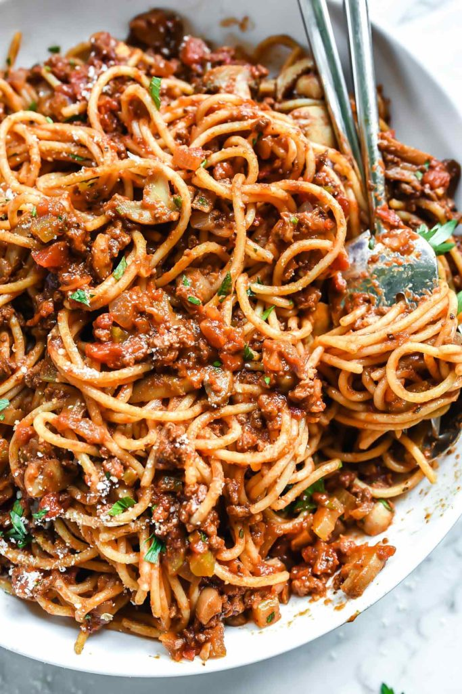

Nona's Spaghetti and Meat Sauce

Description
Nona's spaghetti and meat sauce recipe takes just a few minutes of prep and then a low simmer on the stove for a deep, meaty-flavored, homemade spaghetti for the best family favorite dinner.
Ingredients
- Ground beef
- Tomato sauce
- Diced tomatoes
- Tomato paste
- Beef broth
- Mushrooms
- Red wine
- Onion
- Celery
- Carrots
- Garlic
- Salt and pepper
- Italian seasoning
Directions
- Brown the beef - Drain off any excess fat, then, throw in the chopped celery, onion, and garlic and cook until the vegetables soften.
- Boil and simmer - Dump the rest of the homemade pasta sauce ingredients into the pot and bring the mixture to a boil. Once the spaghetti sauce is boiling, reduce the heat and let it simmer on the stove for 3 hours. I know 3 hours sounds like forever, but that’s how long it takes to make a rich, flavorful meat sauce. Just do what the Italians do, (fuhgetaboutit).
- Cook the noodles - Once the homemade spaghetti sauce has had time to simmer, all that’s left to do is boiling the spaghetti noodles according to package instructions and dish it up!
- Serve - Plate noodles and add generous amount of sauce, garnished with parsley and parmesan cheese.